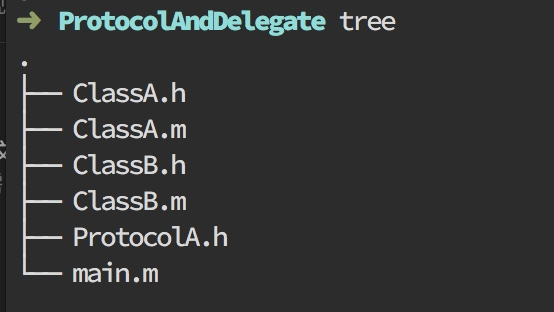
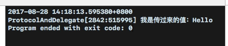

虽然之前一直听过和看过委托模式，但是并没有实际的操作。这次来实现一个简单的委托样例。来加深自己的了解。
项目目录结构为：

首先我们创建一个协议：ProtocolA
#import <Foundation/Foundation.h>
@protocol ProtocolA <NSObject>
@required
-(void)sendValue:(NSString*)str;
@end
其中有一个方法sendValue:，由于加上了@required前缀，所以这个方法时必须实现的。如果想要一个方法是可选则实现与否，则要加上@optional。
之后我们创建一个类ClassA：
//该类遵循ProtocolA，并且实现了它的方法
//ClassA.h
#import <Foundation/Foundation.h>
#import "ProtocolA.h"
@interface ClassA : NSObject<ProtocolA>
@end
//ClassA.m
#import "ClassA.h"
@implementation ClassA
-(void)sendValue:(NSString *)str{
NSLog(@"我是传过来的值：%@" , str);
}
@end
写到这里，我们大概可以猜到，我们想让ClassA的实例来接受一个委托实现ProtocolA中的方法。
所以我们这里继续创建一个ClassB，让它来发出一个委托，让ClassA代替它实现。
//ClassB.h
#import <Foundation/Foundation.h>
#import "ClassA.h"
@interface ClassB : NSObject
//这里我们创建了一个delegate对象，用于设置委托对象。
@property(weak,nonatomic) id<ProtocolA> delegate;
//创建一个方法来执行委托操作
-(void)dowork;
@end
//ClassB.m
#import "ClassB.h"
@implementation ClassB
//创建a的实例，将a设置为接受委托的对象。
-(void)dowork{
ClassA *a = [ClassA new];
self.delegate = a;
//当响应了委托方法时，执行sendValue：
if ([self.delegate respondsToSelector:@selector(sendValue:)]) { // 如果协议响应了sendValue:方法
[self.delegate sendValue:@"Hello"]; // 通知执行协议方法
}
}
@end
最后在main.m中，执行：
#import <Foundation/Foundation.h>
#import "ClassB.h"
int main(int argc, const char * argv[]) {
@autoreleasepool {
ClassB *b = [ClassB new];
[b dowork];
}
return 0;
}
运行结果为：
